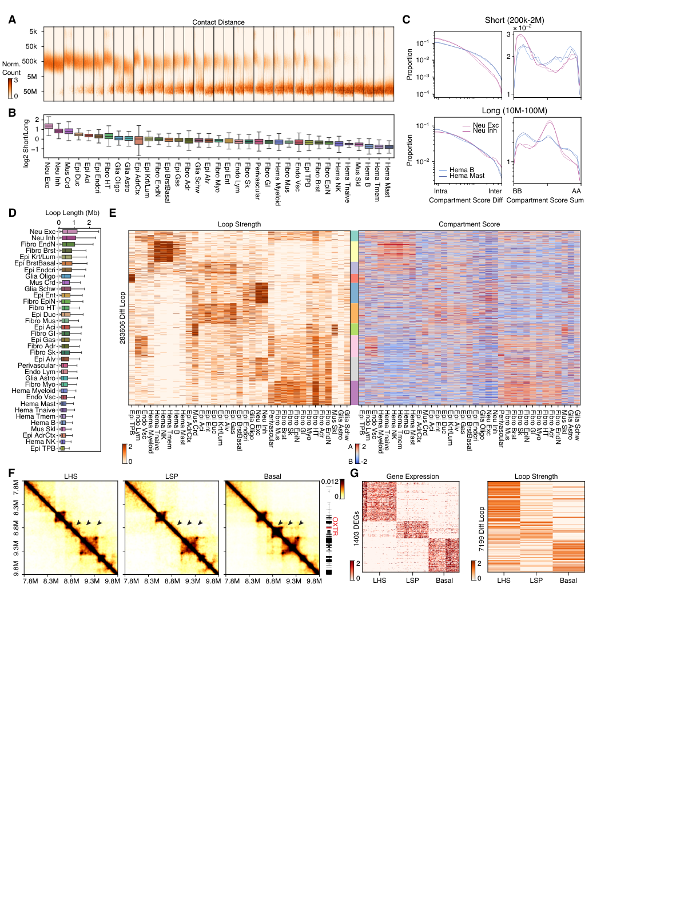

Fig. 4 — Chromatin contacts across cell types#
Fig. 4 characterizes 3D genome structure: contact-distance decay and short/long ratios, compartment- and domain-stratified contacts, loop-length distributions, differential loops across major types, and subtype-specific loops linked to gene expression.

Panel → code map#
Panel |
Notebook |
Cell(s) |
What it makes |
|---|---|---|---|
4A |
c11 |
Per-cell contact-distance decay curves, grouped by major type |
|
4B |
c14 |
Short (200k–2M) / long (10–100M) contact ratio per major type |
|
4C |
c20, c24 |
Contact proportion stratified by compartment-score difference (c20) / sum (c24) |
|
4D |
c13 |
Loop-length distribution by major type |
|
4E |
c22 |
Differential-loop strength + anchor compartment scores, k-means clustered |
|
4F |
c48 |
Browser shot of breast-subtype loops at chr3 OXTR |
|
4G |
c34 |
Differential-loop strength paired with matched DEG expression |
Associated Extended Data figures#
Panel |
Notebook |
Cell(s) |
What it makes |
|---|---|---|---|
S3A ⚠ |
(multi-tissue) |
— |
Cosine similarity DEG expr ↔ differential-loop strength, across colon/stomach/skin/heart subtype×scRNA-celltype. |
S3B ⚠ |
(multi-tissue) |
— |
Same but DEG expr ↔ mCG-at-DMR (DMG–DMR). Methylation-side, multi-tissue — not located in code_share |
S24A |
c19, c21 |
Per-major-type contact proportion by compartment-score diff (c19) / sum (c21) ✅ |
|
S24B |
— |
Scatter: log2 short/long ratio vs compartment interaction types (AA/BB/AB/BA) & compartment strength, raw (top) / imputed (bottom), per major type ✅ (not the domain-boundary notebook) |
|
S25A |
c15 |
Unique loop-pixel count / loop-summit count |
|
S25B |
c8 |
Domain counts per lineage, raw vs imputed |
|
S25C |
c6, c7 |
Domain-length distributions, raw (c6) / imputed (c7) |
|
S25D |
c50, c52 |
APA of per-major-type loops on imputed contacts |
Notebooks in this chapter#
Contact notebooks use the hic env (cooler / scHiCluster). Pipelines: 04
(compartment calling), 05 (dcHiC differential compartments, needs R/dcHiC), 07/08
(ANOVA differential-loop calling).
01.decay (mixed) — 4A/B + ratio↔RNA/compartment correlations + cross-dataset decay validation.
02.decay_compartment / 03.decay_domain (figure) — 4C, S24.
04.compartment (pipeline) — A/B compartment scores, saddle plots.
05.diffcomp_majortype (pipeline) — dcHiC differential compartments →
bin_stats.hdf.06.domainloop_stats (figure) — 4D, S25A–C.
07.diffloop_majortype / 08.diffloop_subtype (pipeline/figure) — ANOVA diff-loop calling (all major types / 3 breast subtypes) + APA (S25D).
09.loop_rna (mixed) — breast diff-loop ↔ scRNA DEG, 4F/G, S3A.
10.loop_comp (figure) — Fig 4E integration.
Run order & overwrite cautions
Order:
04 → 05 → (07, 08);07 → 10(10 c8 rewritesdiff_loop/all/merged_loop.hdf);08 → 09.01c21 rewritesclustering/merged/5kCG100k3C_summary.h5ad(adds Short/Long columns);04rewritesmerged_cool_*trees. Guarded byrepro_guardwhen the files exist.
Gaps & corrections
Fig S3B (DEG vs mCG-at-DMR) is a methylation-side analysis and is not in the Fig. 4 notebooks;
09covers only S3A.S24B and S3A have no
savefigin the notebooks (plotted inline) — add a save call to regenerate for the book.04.compartmentwrites heavily intomerged_cool_*and compartment trees — treat as a regeneration pipeline, keep guarded.
Merge suggestion (not applied): 07+08 (same ANOVA diff-loop pipeline,
parametrize by group); 02+03 (contact decay stratified by compartment/domain, S24).
09/10 share a stats2fdr/order_row helper better factored into a utils module than
merged.